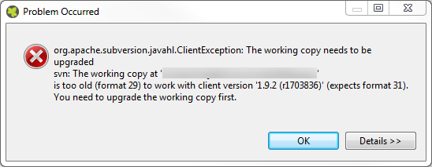

Migration Notes for Axon.ivy Designer 6.0 (Säntis)
This document informs you in detail about incompatibilities that were introduced between Axon.ivy 5.1 (Lauberhorn) and Axon.ivy 6.0 (Säntis) and tells you what needs to be done to get your existing 5.1 projects working with Axon.ivy 6.0.
Table of Content:
- Migration of projects
- Updated to PrimeFaces 5.3
- New default PrimeFaces theme
- Updated to SVN 1.9 (Subclipse 1.12)
- Updated to Java 8
- Public API change
- Removal of deprecated Public API in next version
- Program User Interface (PUI) element removed
- Use new JSF namespaces for the new Html Dialog Editor
Migration of projects (project conversion)
Most of the incompatibilities can be resolved automatically by invoking the project conversion in the Designer.
However, some issues may have to be fixed manually (after the automatic conversion). Those are described in the next sections.
Updated to PrimeFaces 5.3
PrimeFaces and PrimeFaces extensions have been updated to the newest versions. Two already deprecated features have been removed:
- Support for literal texts in filterBy-sortBy expressions were deprecated in Axon.ivy 5.0 and removed in 5.1. These attributes now only work with value expression again like it was before 5.0.
- Deprecated chart components were removed.
New default PrimeFaces theme
The default PrimeFaces theme is now modena-ivy and now longer ivy. The new theme is required by the portal application. To use the ivy theme from 5.1 configure it in the /webapps/ivy/WEB-INF/lib/web.xml. If another theme than the default was defined in the /webapps/ivy/WEB-INF/lib/web.xml it will still be used and no change is needed.
Updated to SVN 1.9 (Subclipse 1.12)
The integrated Subversion client (subclipse) has been updated to version 1.12. It works now with Subversion 1.9. Since Subversion 1.9 has a new working copy format, an upgrade of the working copy is required.
If you want to execute team operations on a project, that has an old working copy, it fails with the following error:

To update an existing working copy with the Designer proceed as follows:
- Change the SVN client to SVNkit:
Windows -> Preferences -> Team -> SVN -> Client -> SVNkit - Run the working copy upgrade:
Project context menu -> Team -> Upgrade - Restart the Designer
- Change the SVN client back to JavaHL as it performs much bettern than SVNkit:
Windows -> Preferences -> Team -> SVN -> Client -> JavaHL
If you use an external SVN client like Tortoise SVN be aware that:
- The client must be updated as well to a version that supports Subversion 1.9.
- If the new SVN client works with Subversion 1.9, it will no longer be able to manage an older working copy that is still used in combination with a Designer older than 6.0. Unless you update the old working copy as well.
- 5.1 Designer working copies can be updated to Subversion 1.9. But then the 5.1 Designer will no longer be able to execute team operations. Unless you update the Designer 5.1 manually to Subclipse 1.12.
Updated to Java 8
Java 7 is out of support since April 2015. Therefore, we moved our whole development to Java 8 thus the new minimal version to run Rich Dialogs is now Java 8. Rich Dialogs will not run any more with older Java versions.
Public API change
Removed Method IIvyScriptContext.getContext(IResponse response)
The Java only Public API method IIvyScriptContext.getContext(IResponse response) has been removed from the interface IRequest. Projects using this method will fail.
If the IIvyScriptContext is still needed an IRequest could be upcasted to a IProcessModelVersionRequest. Ivy.request() already returned an IProcessModelVersionRequest.
Changed behaviour of ISession.loginSessionUser(String username, String password) and ISession.logoutSessionUser()
The Public API method to login or logout has changed. In past, both methods had reset all currently running tasks of the current session, even the current running one. Therefore the related methods
ISession.loginSessionUser(String username, String password, long currentTaskId) or ISession.logoutSessionUser(long currentTaskId) had to be used instead commonly inside a process.
With this version, the named method does no longer reset the currently running task. But it still resets other running tasks of the session. Conveniently some example IvyScript calls old vs. new:
ivy.session.loginSessionUser("user", "pass", ivy.task.getId())is now the same asivy.session.loginSessionUser("user", "pass")ivy.session.logoutSessionUser(ivy.task.getId())is now the same asivy.session.logoutSessionUser()
Removal of deprecated Public API in next version
The following Public API is deprecated for several years and will be removed in the next minor version:
ivyteam.cs.webapp.pi.ConfigurationEditor
Program User Interface (PUI) element removed
The execution and UI support for the PUI element has been removed. It was already deprecated since years. Third party PUI implementations are also no longer supported.
Use new JSF namespaces for the new Html Dialog Editor
The graphical part of the new Html Dialog Editor does not support the old namespaces of JSF (the ones that start with http://java.sun.com/jsf/...) but only the new ones (http://xmlns.jcp.org/jsf/...). If you still use the old ones (from Xpert.ivy 5.0), then please update the namespaces. You can do this by simply do a workspace global search and replace of the old prefix with the new prefix.
| Library | Old URI | New URI |
|---|---|---|
| Composite Components | http://java.sun.com/jsf/composite | http://xmlns.jcp.org/jsf/composite |
| Faces Core | http://java.sun.com/jsf/core | http://xmlns.jcp.org/jsf/core |
| HTML_BASIC | http://java.sun.com/jsf/html | http://xmlns.jcp.org/jsf/html |
| JSTL Core | http://java.sun.com/jsp/jstl/core | http://xmlns.jcp.org/jsp/jstl/core |
| Functions | http://java.sun.com/jsp/jstl/functions | http://xmlns.jcp.org/jsp/jstl/functions |
| Facelets Templating | http://java.sun.com/jsf/facelets | http://xmlns.jcp.org/jsf/facelets |
| Pass Through Attributes | http://java.sun.com/jsf/passthrough | http://xmlns.jcp.org/jsf/passthrough |
| Pass Through Elements | http://java.sun.com/jsf | http://xmlns.jcp.org/jsf |